收录于合集

作品简介
【作者】 Didac Queralt, 耶鲁大学政治学系助理教授
【编译】 李雯珲（国政学人编译员，南开大学周恩来政府管理学院）
【校对】 兰星辰
【审核】 朱文菡
【排版】 梁鑫昱
【来源】 Queralt, D. (2019). War, International Finance, and Fiscal Capacity in the Long Run. International Organization, 73 (4), 713-753.

期刊简介
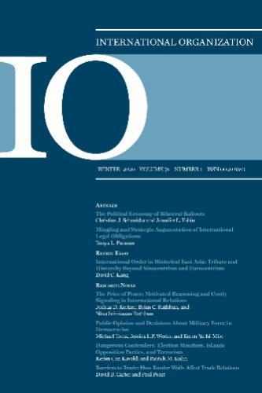
《国际组织》（ International Organization ，简称“IO”），是一份经过同行评议的季刊，涵盖国际事务的领域包括：外交政策、国际关系、国际与比较政治经济学、安全政策、环境争端与解决、欧洲一体化、联盟模式与战争、谈判与冲突解决、经济发展与调整、国际资本流动等。它成立于1947年，由剑桥大学出版社代表国际组织基金会出版，主编是乔治城大学的Erik Voeten。根据Journal Citation Reports显示，2018年其影响因子为4.508，在91个国际关系类期刊中排名第1，在176个政治科学类期刊中排名第1。
战争、国际金融与长期财政能力
War, International Finance, and Fiscal Capacity in the Long Run
Didac Queralt
内容摘要
本文通过关注两种主要的战争融资类型：税收和外国贷款，重新审视现代战争和国家建设的关系。用税收资金为战争筹资，可提高财富评估和合规监测的能力，即财政能力。通过税收融资的战争促使国家采用权力共享机制，这就将税收转变为非零和博弈，对战争产生了长远的影响。对于通过外部资本进行的战争融资来说，债务人可能突然中断偿债，作为违约解决方案的一部分，战争债务被免除或交换为非税收入，则用外部资本融资战争对长期财政能力来说毫无裨益。本文实证证据涵盖全球最早可追溯至1816年的战争。研究结果表明，19世纪资本市场的全球化破坏了战争、国家建设与政治改革之间的联系。
文章导读
01
**研究问题
**
国家形成的好战理论（bellicist theory）认为，国家进行战争的同时，战争也在塑造国家。 战争为国家进行改革提供了契机。国家必须聚集资源支持战争，这促使统治者将税收用于国家建设。战争可以帮助统治者实现财政的中央集权，优化税务管理，推行新的税种。财政创新往往也伴随着国家机构的完善和预算编制水平的提升。战争结束后，财政创新可以继续发挥作用。
这一理论在15到18世纪欧洲国家的形成中得到了验证，但是在外围国家（如亚非拉国家）情况却并非完全如此，在有些国家战争并没有让国家更强大。 为什么在不同地区战争对于国家建设产生了不同的影响？作者认为，外围地区大都在19世纪才开始出现现代国家，那时恰逢第一次金融的全球化。 更加便捷的外部融资手段削弱了国家扩大税收和发展国内信贷体系的动力，打破了战争与国家建设之间的联系。
02
既有研究
既有的关于好战理论的研究多着眼于初始条件，如城市化和政权类型、初始国家能力和社会构成，而忽视了19世纪国际信贷市场流动性的增加与国家形成之间的关系。Centeno和Thies的研究注意到了这一问题，但没能发现其中的理论机制。另一个涉及到这一议题的是李嘉图等价定理，该理论认为国际借贷相当于延迟的税收，二者对国家的长远影响是一样的，然而事实并非如此。
03
战争融资的政治经济学
战争融资手段主要包括借款和税收。 统治者在决定采取何种方式时要考虑可行性与政治机会。作者假定战争（W）的开始与结束都发生在阶段1，统治者可以通过借款（L）和税收（T）的方式为战争筹集资金，且两种方式互斥。统治者在寻求尽可能多地筹集资金的同时，希望做出最小的政治让步。
统治者要从精英或民众那里征税，必然要做出政治让步，即与精英和民众分享政治权力。作者以ct表示统治者的政治让步。以税收支持战争必然要求有一定的财政能力，税收收入以财政能力的现有存量的κ为界，其中κ∈[0, 1]。在征税的同时税务机关的征收和管理税务的能力会得到提高，即未来国家财政能力得以增强η个单位，且η<1。将来的收益率以δ计算。 国家通过税收来为战争融资的当前折现值为
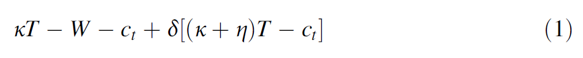
贷款需要在阶段2征税来偿还，需要政治让步ct。国家存在违约的可能性d，由此引发惩罚β，且β>0。 统治者借款的当前折现值如下。 其中(1+i)L表示未来偿还的本金和利息，i=r+p，r表示无风险的主权国家应付的利率，p表示由于存在违约历史而付出的额外费用，且p=(1+r)d/(1-d)。
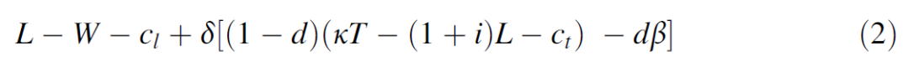
**统治者在两种情况下更偏好于外债而不是税收：一是税收收入不足以支撑战争，即κT <W；二是Κt>W，但是外债的当前折现值大于税收的当前折现值，即（1）≤（2），整理得下式（3）。**其中Δc=(ct – cl).
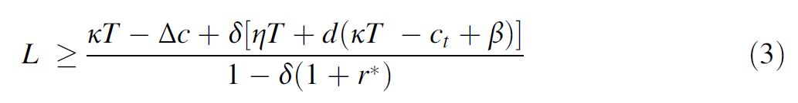
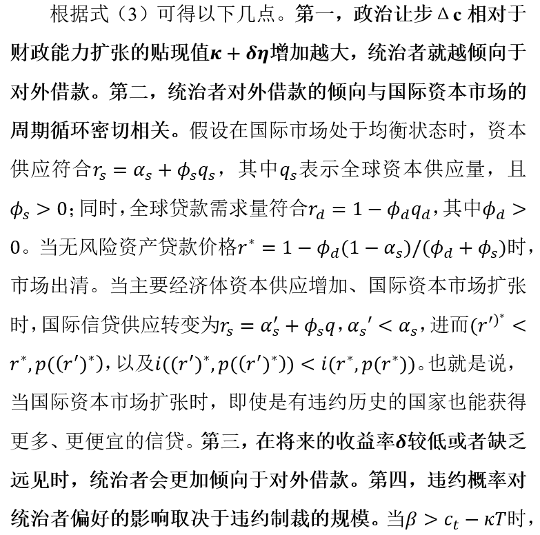
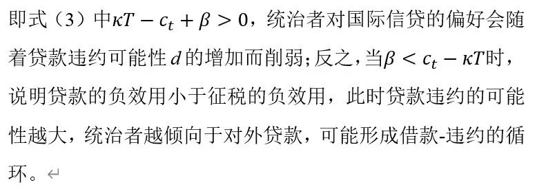
上述分析表明税收和借款进行战争会对国家的财政能力产生不同的影响。李嘉图等价定理认为，外债就相当于延迟的税收。但是，债务减免和以土地、垄断经营权偿还债务的行为使借外债难以达到和税收一样的效果。作者认为， 在其他条件相同的情况下，国家越多地通过税收来支持战争，战争之后的财政能力就会越强大。
04
研究设计
作者将研究对象设定为1816年至1913年之间发生的战争以及这些战争国在2000年前后的财政能力。 作者使用了Wimmer和Min的战争数据库，该数据库涵盖了1800年以后所有伤亡人数超过1000的军事冲突。作者共研究了147起1816-1913年间的武装冲突。
理论上讲作者需要探究国家i在战争j中动用的税收与外债的比例以及这一比例如何影响国家的长期财政能力。但是比例数据很难获取。作为替代， 作者将研究的自变量设定为国家是否可以从国际资本市场借款。当国家不能从国际资本市场借款时，就必然更依赖税收；如果国家可以借到外债，则相反。进一步地，作者认为，当国际借贷市场发生休克时，即国际金融中心发生银行业危机，信贷资金停止供应，国家就无法获得国际借款，反之国家可以获得国际借款。
19世纪见证了第一波金融市场全球化的浪潮。两次工业革命使欧洲国家储蓄外溢，跨境贷款迅速增加，且贷款成本十分低廉，因此许多国家以国际贷款支持战争。当时英国是国际金融中心，其外部资本存量占世界50%以上，最高时甚至接近80%，被称为“世界银行”。但是，英国的金融波动乃至金融危机也会不可避免地波及全世界。表2是1816年至1913年间伦敦的银行业危机和股市崩盘记录。其中每一次金融崩溃都是英国的国内原因导致的（1890年危机还有阿根廷的原因），因此这些金融危机以及由此导致的信贷中断对除英国以外的所有国家而言都是外生变量（1890年危机于阿根廷而言除外）。
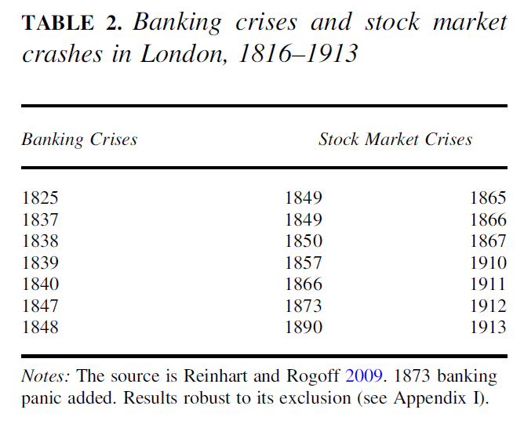
图1以四次金融危机为例，展示了金融危机与国际信贷之间的关系。由图可知，每次危机之前，英国对外资本输出都在高速增长；一旦债务泡沫破裂，国际资金流会急剧缩减，乃至信贷中断。此时英国以外的国家无法获得国际贷款，便会倾向于通过税收来支持战争。
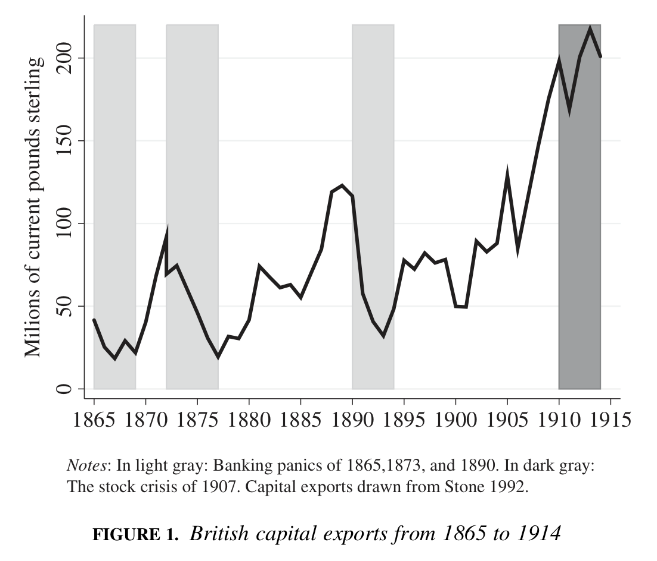
一般而言，在19世纪，每次信贷中断通常会持续四年左右。作者假定每次金融危机后四年内，国家无法获得国际贷款。
作者提出三个指标来衡量长期的财政能力。一是个人所得税。 征收个人所得税需要复杂的财政体系，因此它也被视为国家财政能力建设的终点。在接下来的实证分析中，作者以一个国家在1995年至2005年间个人所得税占GDP比重的平均值来表示该国家的财政能力。 二是财政部门的规模 ，即每千人中税务部门职员的数量。 三是增值税。 作者计算每个国家在1816年至1913年间进行战争的年数，以及每个国家在国际信贷正常流动的年份里进行战争的年数。然后将这些数据与国家在2000年左右的财政能力进行回归分析。
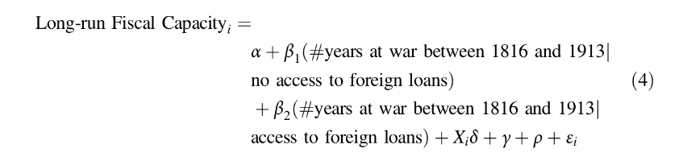
作者认为当统治者无法获得国际贷款时会倾向于通过税收来支持战争，这就促使统治者注重财政能力建设。而如果国家通过国际贷款来进行战争，这对国家财政能力不会起到助力作用，甚至会产生负面作用。即， β1 >0, β2≤0。
需要说明三点。 第一 ， β2≤0的假定与李嘉图等价定理相悖。后者认为贷款和税收在长期来看对国家财政能力产生相同的影响，即β1≈β2 >0。 第二， 在缺少外部资金的情况下，统治者也有可能采取增发货币、国内贷款和金融压制的手段来为战争筹资。这些措施弱化了统治者征税的动力，会使β1偏低。 第三， 对准实验设定非常关键的一点是，除非通过获得内部消息等手段，一般而言无法提前预测信贷突然中止。提前预测并采取行动会加大β1的衰减偏差（attenuation bias）。
式（4）还包括一组 区域固定效应（REGION fixed effects）γ ，即战争频率、信贷获取和建国时机等特定大陆特征。还有一组 殖民起源指标（COLONIAL ORIGINS indicators）ρ ，因为作者认为殖民地进行战争的时机、建立的税收结构以及外部信贷的条款都会受到大都市的制约。此外，还有一系列 潜在混杂因素X ，包括初始财富状况（由于缺少19世纪GDP数据资料，作者以1820年的人口密度来衡量）、距海洋的距离（距离最近无冰海岸少于100千米的陆地面积占国土总面积的百分比）、荒漠（荒漠面积占国土总面积的百分比）、资源禀赋（是否为产油国）、地形崎岖性以及土地面积。
05
数据分析和内生性检验
下列所有分析的样本都不包括英国。
第1列作者检验没有任何限制条件的好战理论，即战争能否让国家更强大。 结果显示，在90%的置信区间内，国家个人所得税的比重会随着19世纪进行战争的年数增加而增加，证明了该理论。 第2列中，作者区分了无法获得信贷时的战争对国家的影响β1和可以获得信贷时的战争对国家的影响β2。结果显示β1^为正且显著。 在信贷中止时的战争年数每增加一单位，个人所得税占GDP的比重就增加49%；相反，在信贷流动时的战争年数每增加一单位，个人所得税占GDP的比重就减少31%。 这说明通过贷款融资进行战争可能会造成财政失衡。图2中一正一负的β1^和β2^表明表4第1列中的数据是两种激进的情况相中和的结果。这一结果进一步加深了我们对战争塑造国家的条件的理解， 比战争更重要的是如何为战争融资。
表4的后面8列都是检验结论的稳健性。由数据可知，19世纪时是否为大国（即英国、法国、德国、意大利、奥匈帝国）、民族分化（ethnic fractionalization）、内战年数、是否参与一战等因素会对长期财政能力产生较为显著的影响，而战争位置（在国内还是在国外）、战争伤亡数、战争持续时间、国家名誉等因素影响并不显著。更为重要的是， 上述因素都不会显著影响β1和β2。 附件中作者还分析了民主制度和领土面积等因素，结论与上述类似。 总之，战争并不必然塑造国家，而是取决于统治者投资财政能力的动力。当无法获得外部贷款时，这一动力会增强，反之则会减弱。
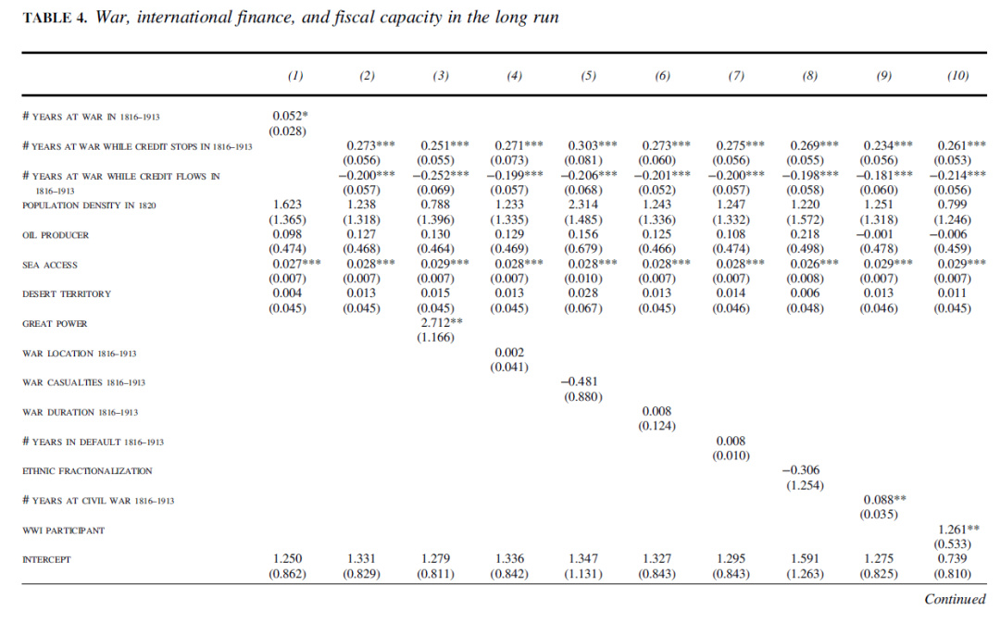
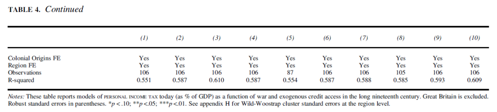
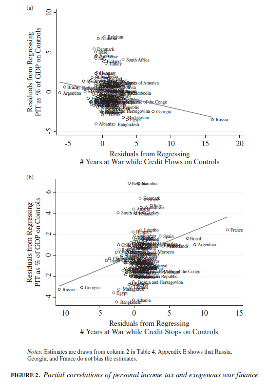
在表5中，作者分析了国家实力、是否为殖民地（或者说是否被承认为主权国家）、战争属性（是分裂战争还是国家间战争）等因素对国家长期财政能力的影响。结果表明这些因素都不会对国家长期财政能力产生显著影响。此外，作者还在第7、8列中将国家财政能力的指标换成税务部门的规模，即2005年左右每千人中税务部门职员的数量。回归结果仍然支持作者的假设。
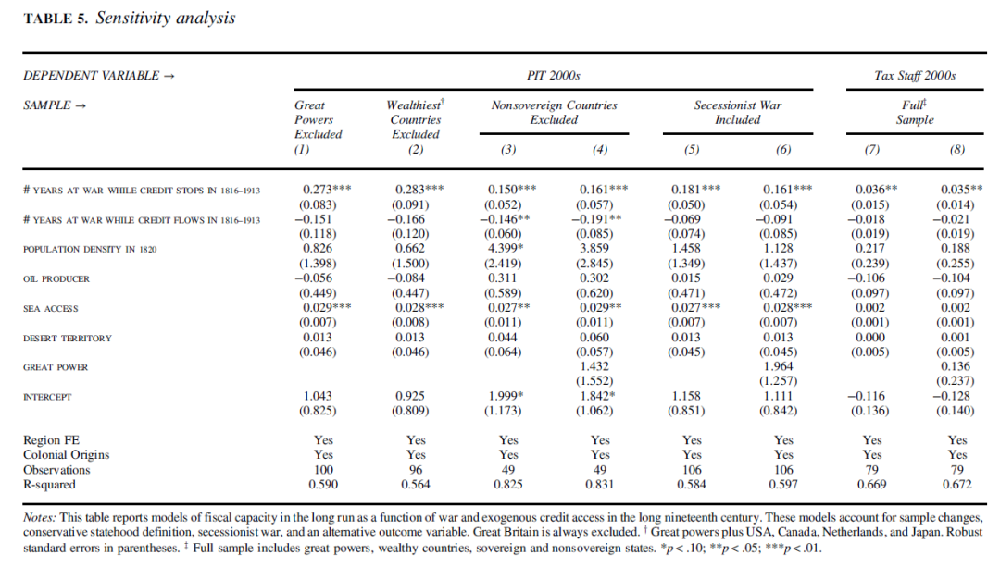
在初始国家能力方面，作者在前文已经检验了国家财富状况和人口密度对长期财政能力的影响。此处作者选取了国家年代指数（STATE ANTIQUITY index）和人口普查能力两个指标。国家年代与军事和行政能力的积累有关；人口普查可以帮助统治者了解国家的人口状况和可征收的财富水平，作者对1820年前进行过人口普查的国家赋值1，否则为0。表6第1、2列结果显示，这两个因素对国家财政能力没有显著影响。
作者还专门检验了在发生时信贷正常、进行期间信贷突然中止的战争对国家财政能力的影响。表6的3、4、5列中β1^比表4中的要小，这意味着在表4中β1^可能被高估了。
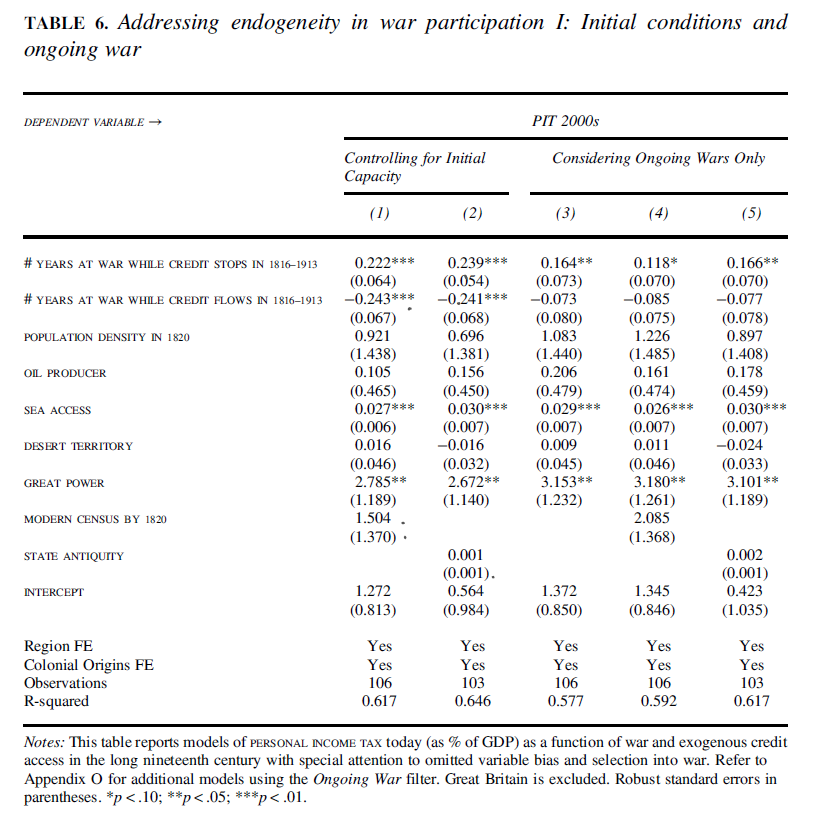 在参与战争的身份方面，有些国家是主动挑起战争，而有些国家是被迫卷入战争。战争结果则有胜有败。 **作者运用 COW数据库检验国家参与战争的身份以及战争结果是否会对国家长期财政能力产生影响。**由于限制条件更加严苛，COW数据库所含战争数目比前文所用数据库要少，1816年至1913年间共有37场战争，172国家·年·战争。表7的第1、2列对所有战争数据进行了检验，虽然样本发生了变化，但结论保持稳健。 第 3、4列作者对被迫卷入战争的国家的数据进行了分析，结果与前文类似，在信贷中止期间被卷入战争的国家长期来看财政能力更强。而战争结果对国家长期财政能力并没有显著影响。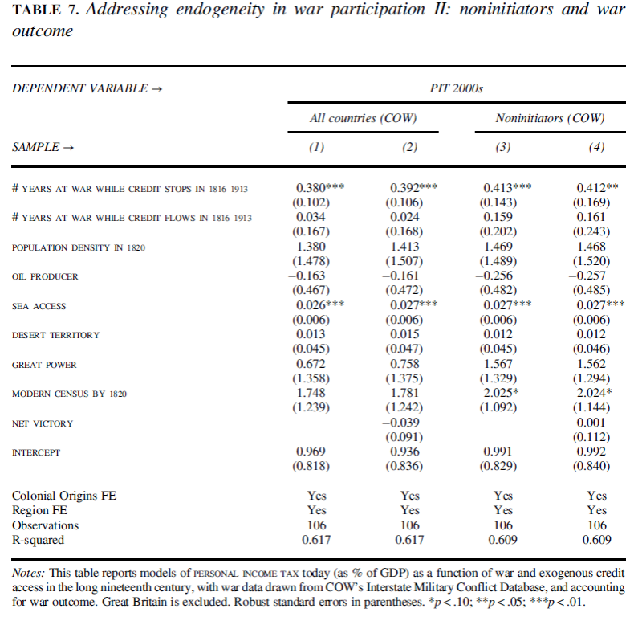
06
短期影响
考虑到能力的增长需要一个过程，那么在短期也应该可以观测到国家财政能力的增长。由于缺少20世纪初的税务数据，作者采取以下两个指标来衡量国家财政能力：一是国家在1913年前是否组织了现代人口普查，二是1913年小学的入学率。 结果显示，只有在缺少外部贷款时进行战争才可以使国家更有可能在1913年前有能力组织现代人口普查，也只有在这种情况下才有可能提高小学的入学率。
07
影响机制
作者在此处介绍了19世纪的战争融资对二战后国家财政能力的影响机制。由于数据的限制，作者以复杂的税种（如所得税，而不是关税等贸易税）来衡量国家的财政能力。作者计算了1945年至1995年间每十年非贸易税占全部税收比重的平均值。通过回归分析得到图3。
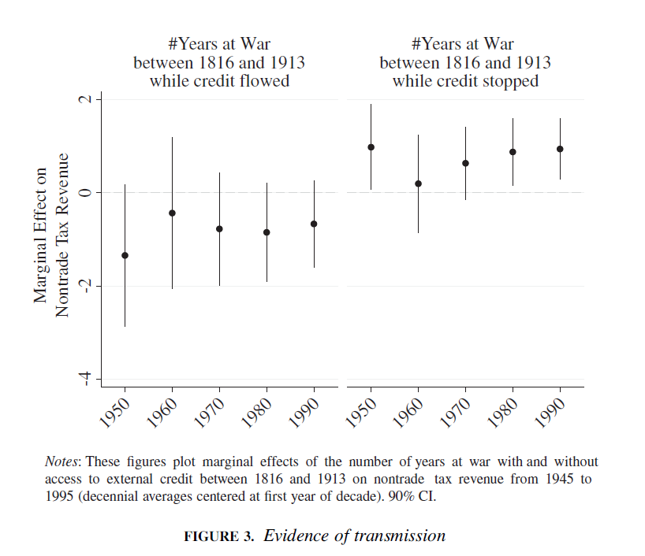
由图可知，在可以获得信贷的时期进行战争不会增长二战后的财政能力，而在信贷中断时进行战争可以。在其他条件相同的情况下，每增加一年在信贷中断时的战争，二战后非贸易税的比重就会增加1%。
那么战争效应是如何通过政治途径影响国家财政能力的呢？ 作者认为，统治者为了增加税收，必然要与纳税人分享政治权力。权力分享体制使征税成为了非零和博弈，即统治者获得了税收，纳税人获得了财政上的权力，这就促进了国家对税务能力的持续投资。 然而，研究结果表明， 当统治者可以获得国际贷款时，其以税收来支持战争的动力就会下降。 图4支持了这一政治机制：不论是短期还是长期，在缺少外部贷款时进行战争都会增加对政府的限制，在信贷正常时进行战争则不会有这种效果，甚至会减少行政限制。因此，当统治者不能获得国际贷款时，不可避免地要征税，这会促进政治改革；政治变革实现税收双赢，长期来看使国家实力得到增长。
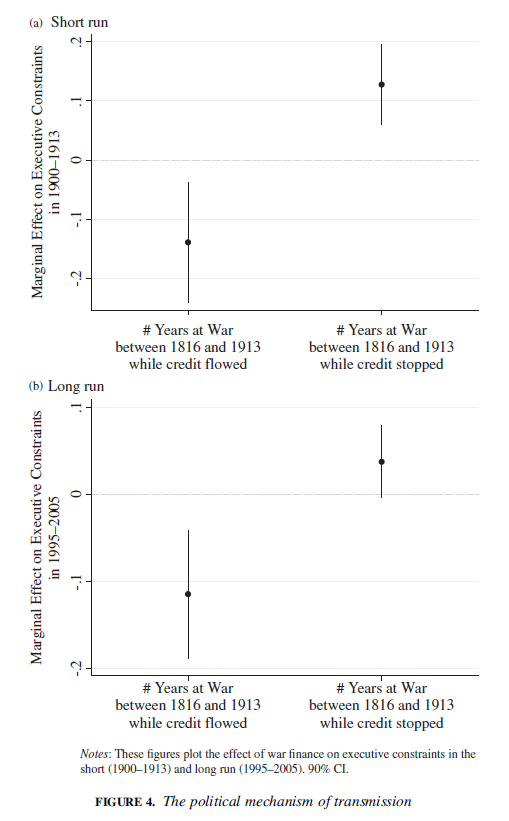
08
总结
与传统好战理论不同，作者不认为越多的战争就意味着越多和越强大的国家，而是要取决于统治者如何为战争融资。 只有以税收支持战争才是有助于国家建设的，而如果是通过外债则不会有这种效果。
至于为什么统治者可能会更加倾向于国际信贷而不是税收， 作者认为原因可能包括以下几点。 第一 是统治者的短视； 第二 是国家初始实力不足，难以征收到足够的税； 第三 是初始状态权力较集中，统治者不愿意分权； 第四 是国际信贷市场的高流动性以及优惠的贷款条件； 第五 是当国家无力还债时，减免债务或以非税收入（土地）和国家垄断经营权偿还债务的行为更加强化了统治者对外债的偏好。
译者评述
战争与国家建设之间的关系历来为国关学者所关注。好战理论认为战争能使国家更强大，但是本文指出，只有通过税收而不是借款来进行战争才能增强国家实力。这一理论为近现代中心国家和外围国家在战火中不同的发展情况提供了新的解释路径。
本文的研究补充和发展了传统的战争理论。利用国际贷款来进行战争，短期来看可以减轻征税面临的压力，长久来看却于国家实力增长无益。既有的关于战争与国家能力的研究有很多，如有学者以战争类型划分，认为国际战争比内战更能促进国家实力的增长。本文则从战争融资方式视角进一步补充了类似的研究。
如果说战争类型是由冲突本身性质决定的话，那么战争融资类型在很大程度上是统治者自主选择的结果。国家的发展不是一朝一夕之功，要想有长远之效，就必须眼光长远。统治者如果只图眼前之利或一时之快，甚至只顾自己的政治利益，就必然难以有所成就。
【参考文献】
[1] Besley, T., & Persson, T. (2008). Wars and State Capacity. Journal Of The European Economic Association , 6 (2-3), 522-530.
本文由国政学人独家编译推荐，文章观点不代表本平台观点，转载请联系授权。